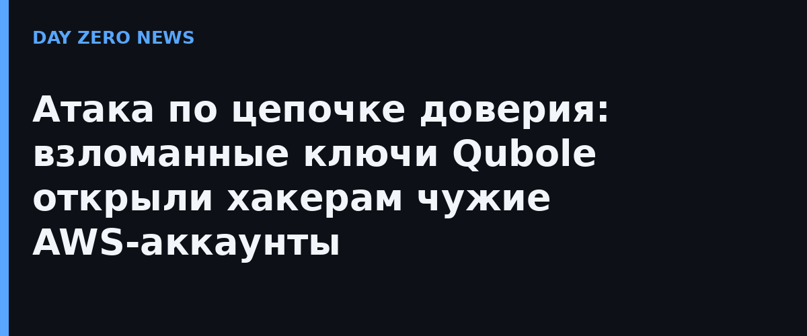

Многие SaaS-платформы, которые работают внутри облака клиента, получают доступ через кросс-аккаунтные IAM-роли: клиент сам создаёт роль с политикой доверия к аккаунту вендора и External ID. Исследователи Wiz вместе с Sentra и Mandiant увидели, как эту штатную механику обернули против клиентов. С 14 по 26 октября злоумышленник работал из AWS-аккаунта 805246085872, которым платформа Qubole пользуется для AssumeRole в окружениях клиентов, — от имени двух скомпрометированных IAM-пользователей, чьей активности вне этой кампании Wiz не наблюдал вообще.
Картина в каждом окружении была одинаковой: принять роль, вызвать ListBuckets, перечислить и осмотреть объекты, скачать всё доступное. По пути атакующий выгребал секреты из AWS Secrets Manager, SSM Parameter Store и переменных окружения Lambda, а найденные ключи валидировал TruffleHog — подходили не только aws-ключи, но и клиентские секреты Microsoft Entra ID и Okta. Sentra оценивает скорость сбора: сто паролей и ключей за семь минут, а от одного клиента украдены миллионы файлов. Роль первого звена цепочки (Sentra) здесь показательна: именно мониторинг данных позволил распознать атаку на цепочку поставок раньше, чем это сделали облачные логи самих жертв.
Sentra говорит о десятках пострадавших, SecurityWeek — более чем о дюжине организаций с украденными секретами и файлами. Отдельного официального анонса от самой Qubole нет: BleepingComputer не нашёл публичного уведомления и ждёт ответа на запрос. Пока в этой этой атаки громче всех говорят те, кто её нашёл, а не тот, через кого она прошла.
Практический блок для всех, у кого есть кросс-аккаунтные роли: проверьте, какие роли доверяют сторонним аккаунтам, и отзовите те, что не используются в проде; убедитесь, что External ID уникален и не предсказуем; поднимите аудит CloudTrail на предмет AssumeRole с непривычных адресов (в этой кампании стартовый IP принадлежал VPN-провайдеру Mullvad); ротация секретов в Secrets Manager, Entra ID и Okta — не «когда-нибудь», а сразу после такого рода уведомлений. И главное: доступ вендора — это ваш расширенный периметр, живущий по вашим правилам, а не чужая «просто интеграция».